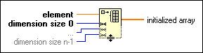

Initialize Array Function
Owning Palette: Array VIs and Functions
Requires: Base Development System
Creates an n-dimensional array in which every element is initialized to the value of element.
Use the Positioning tool to resize the function and increase the number of dimensions (element, row, column, page, and so on) of the output array. The connector pane displays the default data types for this polymorphic function.

 Add to the block diagram Add to the block diagram |
 Find on the palette Find on the palette |